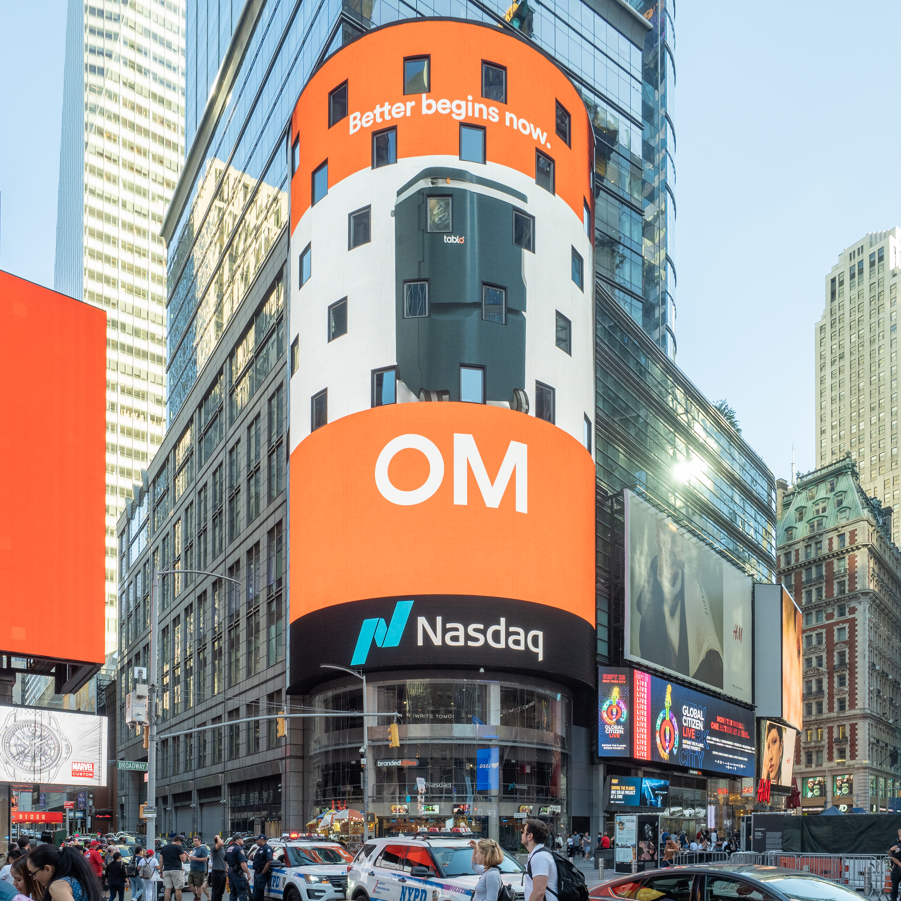

Perché conta: Nella stessa giornata il mercato azionario americano segna un record storico e il mercato obbligazionario resta sui rendimenti più alti da 24 anni. Sono due giudizi opposti sullo stesso futuro: le azioni scommettono su utili e intelligenza artificiale, le obbligazioni su un'inflazione che non si spegne. Storicamente, quando le due letture divergono così, è il mercato obbligazionario a dettare il finale.
Wall Street chiude la seduta del 6 ottobre 2026 sui massimi. L'S&P 500 termina a 7.825,35 punti, in rialzo di 51,40 punti pari allo +0,66%: è il primo close della storia sopra i 7.800 punti. Il Nasdaq Composite sale di 171,54 punti a 27.648,85 (+0,62%), anch'esso a un nuovo record insieme al Nasdaq 100, mentre il Dow Jones guadagna 255,69 punti a 51.523,59 (+0,50%). Eppure il rendimento del Treasury a 10 anni resta al 5,27%, poco sotto il massimo di chiusura degli ultimi ventiquattro anni.
| Indice | Chiusura 6 ottobre | Variazione giorno |
|---|---|---|
| S&P 500 | 7.825,35 (record) | +0,66% (+51,40 pt) |
| Nasdaq Composite | 27.648,85 (record) | +0,62% (+171,54 pt) |
| Dow Jones Industrial Average | 51.523,59 | +0,50% (+255,69 pt) |
La contraddizione della giornata
Il paradosso merita di essere guardato da vicino. Il Treasury decennale ha chiuso al 5,27%, in leggero calo rispetto al picco del 5,31% toccato dopo i dati sui servizi, ma comunque a un soffio dal massimo di chiusura degli ultimi ventiquattro anni. Il 30 anni si è attestato al 5,64%, vicino ai livelli più alti dal 2002.
In teoria rendimenti obbligazionari così elevati sono il nemico naturale delle azioni, per due ragioni. La prima è la concorrenza: se un titolo di Stato americano offre oltre il 5% senza rischio di insolvenza, una parte del capitale che altrimenti andrebbe in Borsa resta nel reddito fisso. La seconda, più tecnica, è il tasso di sconto: il valore di un'azione dipende dagli utili futuri attualizzati a oggi, e più alto è il tasso usato per attualizzarli, meno valgono quegli utili lontani nel tempo — effetto che colpisce soprattutto i titoli di crescita, proprio quelli del Nasdaq.
Che gli indici tecnologici segnino record in questo contesto significa che il mercato azionario sta scommettendo su una crescita degli utili abbastanza forte da compensare il costo del denaro. È una scommessa legittima, non una certezza.
💡 Impara: il tasso di sconto, ovvero perché i rendimenti muovono le azioni
Il valore di un'azione è, in teoria, la somma di tutti gli utili futuri che l'azienda genererà, riportati al valore di oggi. Riportarli a oggi è necessario perché 100 euro fra dieci anni valgono meno di 100 euro adesso: il tasso usato per questa conversione è il tasso di sconto, e il suo punto di partenza è il rendimento dei titoli di Stato privi di rischio. Quando quel rendimento passa dal 2% al 5%, gli utili attesi fra dieci anni perdono molto valore attuale. Per questo i titoli di crescita — le aziende i cui profitti più grandi sono attesi lontano nel futuro — soffrono più delle aziende mature che già generano cassa oggi. È lo stesso meccanismo, in direzione opposta, che spiega perché le Borse salgono quando il mercato smette di temere nuovi rialzi dei tassi.
Il dato che tiene vivo il dibattito sui tassi
A impedire ai rendimenti di scendere c'è un'inflazione che non collabora. L'indicatore più citato in questa fase è il Prices Paid (prezzi pagati), la componente delle indagini ISM che misura quanto le imprese stanno spendendo per materie prime e componenti. A settembre il dato manifatturiero è salito a 77,9%, con un balzo di 6,8 punti percentuali rispetto al 71,1% di agosto.
Le cause indicate dalle imprese stesse sono due. I dazi compaiono in circa il 34% dei commenti negativi, in particolare su acciaio e alluminio importati e sui componenti che attraversano i confini; i costi energetici in circa il 30%, effetto del conflitto in Medio Oriente sui prezzi dei derivati del petrolio. Sono costi che raramente restano in fabbrica: le aziende tendono a trasferirne almeno una parte sui prezzi finali nei mesi successivi.
Il contesto resta quello di un'inflazione al 3,4% annuo sul dato principale e al 2,4% sulla componente di fondo, con la Federal Reserve che il 16 settembre ha portato i tassi nella fascia 3,75%-4,00%, primo rialzo in oltre tre anni. Dopo il rapporto sull'occupazione molto debole del 2 ottobre il mercato aveva dato per quasi certa una pausa a ottobre; i dati sui prezzi delle ultime sedute hanno riaperto la discussione.
💡 Impara: come i dazi diventano inflazione
Un dazio è un'imposta sulle merci importate, pagata da chi importa, non dal paese esportatore. L'azienda che compra acciaio dall'estero vede quindi aumentare il proprio costo di acquisto e si trova davanti a tre strade: assorbire l'aumento comprimendo i margini, trasferirlo sui prezzi di vendita, oppure cercare un fornitore nazionale che però, protetto dalla concorrenza estera, può a sua volta alzare i prezzi. Nei primi due casi l'effetto finale è lo stesso: utili più bassi o prezzi al consumo più alti. È il fenomeno del pass-through (trasferimento sui prezzi), e spiega perché una misura di politica commerciale finisca per comparire nei dati di inflazione — e quindi nelle decisioni di una banca centrale, che sui dazi non ha alcun potere.
Nvidia e AMD trainano il record del Nasdaq
La spinta è arrivata ancora una volta dai semiconduttori legati all'intelligenza artificiale, con Nvidia e AMD in testa al comparto tecnologico. Per Nvidia la capitalizzazione di mercato si è avvicinata ai 5.800 miliardi di dollari, consolidando il rialzo partito a fine settembre con l'annuncio del riacquisto di azioni proprie da 150 miliardi.
Dietro il movimento c'è anche l'attesa per la stagione delle trimestrali — l'Earnings Season (stagione delle trimestrali) — che si apre nelle prossime settimane e che per la prima volta metterà alla prova, sui numeri, le aspettative costruite durante l'estate sugli investimenti in infrastrutture per l'intelligenza artificiale.
Materie prime e Bitcoin
Sul fronte energetico la seduta è stata contrastata. Il Brent ha chiuso a 100,84 dollari al barile (+0,51%), restando appena sopra la soglia dei 100 dollari, mentre il WTI americano è scivolato a 87,99 dollari (−1,61%): il divario insolitamente ampio fra i due riferimenti riflette le tensioni logistiche legate allo Stretto di Hormuz, che pesano più sul greggio di riferimento europeo che su quello statunitense.
L'oro ha ceduto lo −0,44% a 4.121,39 dollari l'oncia, coerentemente con rendimenti reali elevati che ne aumentano il costo opportunità. Il Bitcoin ha avuto una giornata volatile: partito in area 85.750 dollari, ha superato due volte gli 86.000 toccando un massimo di 86.450 dollari dopo notizie di natura regolamentare dalla CFTC (la Commodity Futures Trading Commission, l'autorità americana sui mercati dei derivati), per poi ripiegare verso i 85.583 dollari.
| Tassi e materie prime | Valore 6 ottobre | Variazione |
|---|---|---|
| Treasury 10 anni (rendimento) | 5,27% | massimi da 24 anni |
| Treasury 30 anni (rendimento) | 5,64% | massimi dal 2002 |
| Brent | $100,84 | +0,51% |
| WTI | $87,99 | −1,61% |
| Oro | $4.121,39 | −0,44% |
| Bitcoin | circa $85.583 | massimo di giornata $86.450 |
Cosa osservare nelle prossime sedute
Il primo elemento è la riunione della Federal Reserve di ottobre, ora meno scontata di quanto sembrasse dopo il rapporto sull'occupazione del 2 ottobre: i dati sui prezzi hanno riaperto la possibilità di un rialzo, e il mercato non lo sta prezzando appieno. Il secondo è il tratto lungo della curva: se il 30 anni superasse stabilmente il 5,7%, sarebbe il segnale che gli investitori chiedono un premio crescente per finanziare il debito americano a lunga scadenza, indipendentemente dalle mosse sui tassi a breve.
Terzo, l'avvio delle trimestrali: finora il rally è stato sostenuto dalle aspettative più che dai risultati, e i prossimi conti diranno se le valutazioni raggiunte sono giustificate. Da seguire infine l'evoluzione sul fronte dei dazi e dello Stretto di Hormuz, le due fonti di pressione sui costi che le imprese americane citano più spesso.